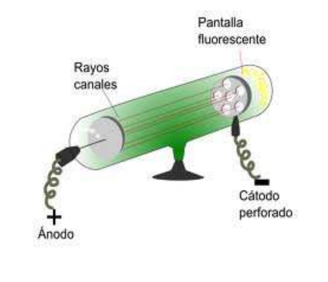

Una nueva partícula fundamental
Los protones fueron detectados por primera vez en durante los años 1894 a 1897, gracias a los experimentos de JJ. Thomson sobre el fenómeno de los "rayos catódicos", que habían sido descubiertos en 1858. En 1879, Thomson describió que la corriente aplicada a dos placas de metal producía una corriente de partículas que levaban cargas eléctricas negativas, había descubierto los electrones.
Años más tarde, en 1886, Goldstein hizo una modificación del experimento de Thompson: montó un tubo catódico con esa placa (cátodo) perforado. Al hacer pasar la corriente a través de este, observó que algunos rayos atravesaban dicho orificio en sentido contrario a los rayos catódicos. A estos rayos los denominó: rayos canales.
 Este descubrimiento pasó inadvertido hasta 1895, cuando J. Perrin demostró que los rayos canales estaban compuestos por partículas cargadas positivamente; los rayos canales se producían porque estas partículas positivas sufrían desviaciones hacia la placa negativa cuando se les aplicaba un campo eléctrico. Es por esto que a los rayos canales también se les pasó a denominar rayos positivos. El valor de esos rayos positivos era siempre múltiplo de un valor (la unidad de carga positiva que después se denominó protón).
A pesar de no haberlos descrito o haber estudiado su posición en el átomo, algunos investigadores consideran que el verdadero descubridor del protón fue Goldstein, con su experimento de los rayos canales en 1886. En cambio, otros investigadores apuestan por Rutherford como verdadero descubridor de los protones, ya que fue él quien bautizó por primera vez a la partícula y describió su posición y función en el núcleo atómico.